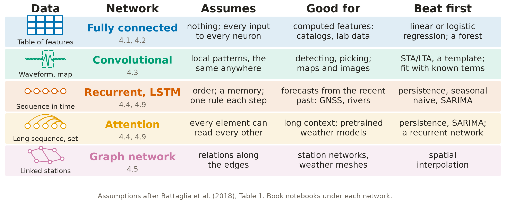
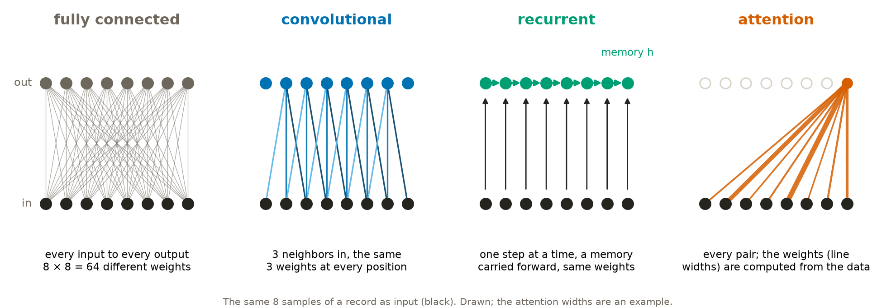
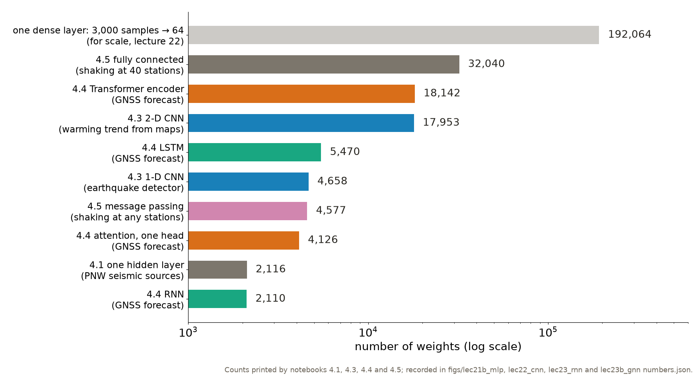
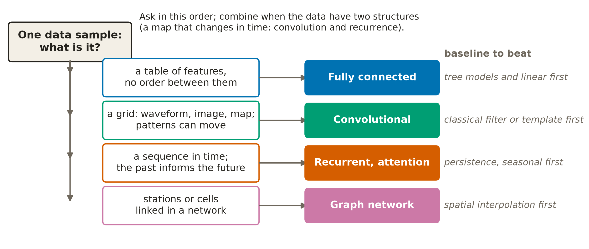

Chapter 4 side by side:
one loop, five kinds of network
Session 26 · Book sections 4.0–4.9
🧭
The question of the chapter
Fully connected, convolutional, recurrent, attention, graph.
Given a geoscience dataset, which network, which baseline, and how do we know it was worth it?
Reference deck for the end of Chapter 4 and for projects · rubric: 4.7
The canonical networks, and what each is good for

Each layer assumes how its inputs are related. Choose the one whose assumption holds for your data.
What one layer connects

Dense: all pairs, all different. Convolution: neighbors, shared. Recurrence: one step at a time, with memory. Attention: all pairs, weighted by the data.
How many weights?

Every network of the chapter has 2,000 to 32,000 weights. One dense layer on a 30-s record would need 192,064: sharing weights is what keeps them small.
Each network against its baseline
| Data (notebook) | Network | Baseline | Verdict |
|---|---|---|---|
| PNW features (4.1) | 89.2% | forest 88.5% | tie |
| P395 summaries (4.2) | 0.70 mm | linear 0.63 | linear |
| waveforms (4.3) | SNR 1.4 | STA/LTA ≈ 9 | network |
| warming maps (4.3) | 0.008 | known terms 0.009 | tie |
| GNSS series (4.4) | 1.87–1.95 mm | persistence 2.10 | network |
| shaking at stations (4.5) | 0.137 | IDW 0.182 | network |
| CO₂ (4.9) | MASE 0.327 | SARIMA 0.256 | SARIMA |
The same loop for every network

Four lines per batch, one check per epoch. Only model changes between the five kinds of network.
The training checklist, for any network
| Step | Practice | Rubric |
|---|---|---|
| Before | split, scale, baseline, ranges | A3–A7 |
| Start | seeded random weights | D1 |
| Loss | fits Y and its errors; class weights if unbalanced | D2 |
| Optimizer | Adam at 0.001; look at the curve | D5 |
| Stop | lowest validation loss; checkpoint | D4, D6 |
| Report | three seeds; test once; ties are ties | D7, D8, E3 |
What differs: design checks per network
| Fully connected | Convolutional | Recurrent | Attention | Graph | |
|---|---|---|---|---|---|
| Input | standardized features | normalized records | causal windows | windows + positions | stations, edges |
| Size it by | samples per weight | receptive field | memory needed | context; cost n² | neighbors (km) |
| Baseline | linear, forest | STA/LTA, known terms | persistence, seasonal | same | IDW, kriging |
| Report | confusion matrix | score vs SNR | error vs horizon | same | error vs distance |
Six failures we met, and the check that catches each
| Failure | Where, measured | Check |
|---|---|---|
| test outside training range | 4.2: worse than persistence | A7 |
| baseline misses the trend | 4.4: 15.5 against 2.1 mm | C3.3 |
| baseline misses a term | 4.3: 0.083 → 0.009 | A6 |
| training too long | 21b: best epoch 13 of 1,000 | D6 |
| a seed that changes nothing | 4.9: spread 0.000 | D7 |
| synthetic to real | 4.3: 87.9% → 46.8% | E5 |
A decision guide

Start from one data sample and ask what it is. The answer chooses the network and the baseline it must beat.
In the literature: one result for each kind of network
Table
Fully connected. Glacier mass balance, French Alps, from features: error 0.51 m w.e. per year on held-out glaciers, against 0.74 for Lasso.
Bolibar et al. (2020). The Cryosphere, 14, 565–584. CC BY 4.0.
Grid
Convolutional. El Niño from ocean maps: useful skill for about 1.5 years, above dynamical forecast systems.
Ham, Kim & Luo (2019). Nature, 573, 568–572.
Sequence
Recurrent (LSTM). Floods in ungauged rivers, 5 days ahead, as reliable as same-day global nowcasts; operational in over 80 countries.
Nearing et al. (2024). Nature, 627, 559–563.
Graph
Graph network. 10-day global weather on a mesh of cells: better than ECMWF’s deterministic forecast on 90% of 1,380 targets.
Lam et al. (2023). Science, 382, 1416–1421.
For your project
- What is one sample? Table, grid, sequence or network of stations
- Which network does that choose, and which baseline must it beat?
- Run the training checklist; three seeds; test once
- One test along the deployment axis: a later period, another region, real records
Book section 4.7 is the rubric; give it to your coding assistant and check its evidence yourself
Four canonical networks: the chapter in one table
Choose the row from one data sample. Train it with the one loop; publish a leaderboard with the last column as a row.
ESS 469/569 · Machine Learning in the Geosciences · Autumn 2026